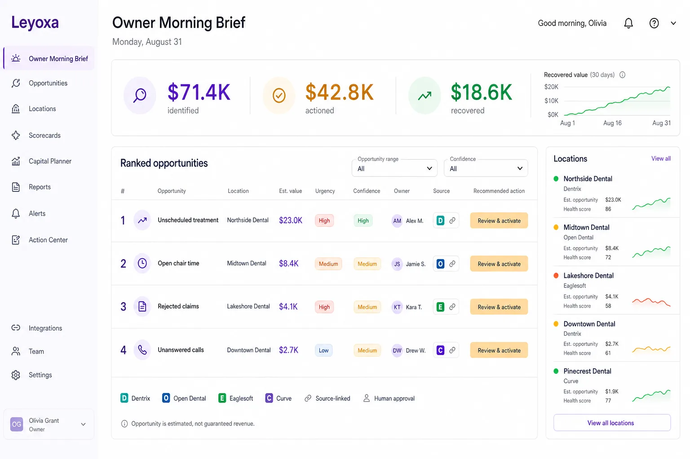
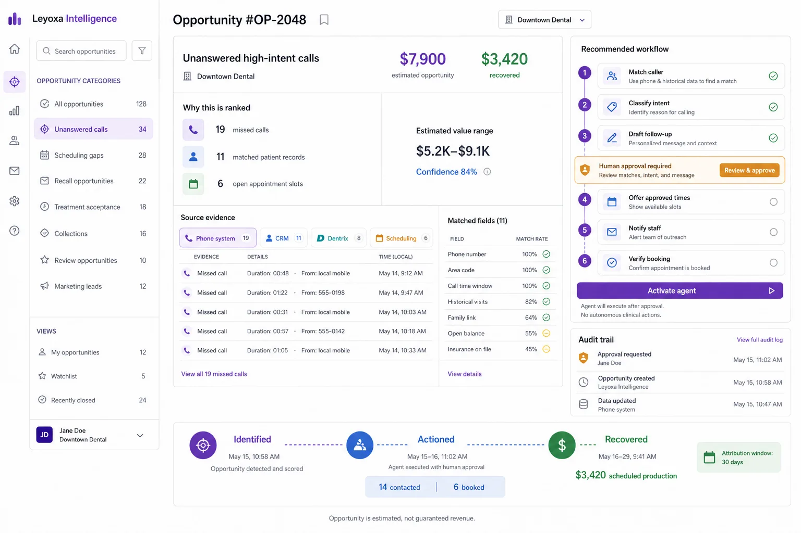
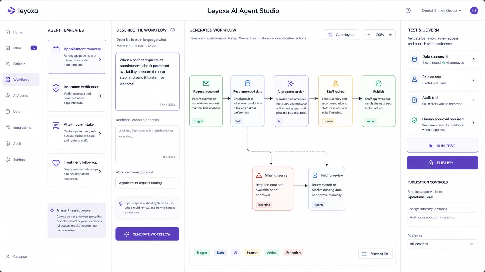

Find the operational exception.
Compare production, capacity, patient access, revenue cycle, reputation, and marketing signals.
Product direction · Post-close intelligence
The current offer is the read-only Acquisition Review. This page shows how its source, ownership, and audit model could later rank operational opportunities and coordinate approved action.
Status: the interfaces below are concept designs using fictional data. They are not the current acquisition deliverable or customer results.
Production, chair utilization, unanswered calls, recall, unscheduled treatment, collections, reviews, and marketing become one prioritized operating view across every location.

Every opportunity carries a calculation, realistic range, source evidence, accountable owner, permitted action, attribution window, and final outcome.
Compare production, capacity, patient access, revenue cycle, reputation, and marketing signals.
Show assumptions, confidence evidence, and why estimated opportunity is not guaranteed revenue.
Require approval where communication, offers, system writes, or clinical context create consequence.
Confirm bookings, collections, or scheduled production inside a declared attribution window.
Open any recommendation to inspect its evidence, money model, matched fields, owner, workflow, approval checkpoint, audit history, and verified result.

A useful intelligence layer does not replace recognizable dental records with generic scores. Six-site periodontal charting, note excerpts, procedures, dates, and matched fields remain inspectable.

Generate a workflow in plain language, test the steps, define failure paths, and activate only the actions a named owner has approved.

It uses the same connected data, permissions, identity, provenance, and audit foundation as every Leyoxa workspace.
Normalized context never erases where the underlying record came from.
Clinical interpretation, patient communication, and system writes require their own approved boundaries.
Reviewers can inspect, reject, hold, or trace the records behind the output.
The current intelligence path ends with a bounded target review. The broader operating brief remains the product direction after close.
Review an opportunity